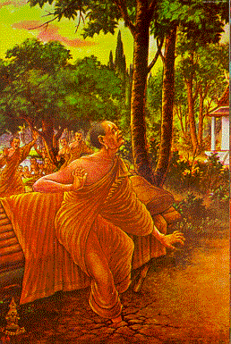

BuddhaSasana Home Page
This document is written in Vietnamese, with
Unicode Times font
| 25 | 26 |
|  | |
| Devadatta tried against the Buddha
by all means for many thousands of births. He made schism in the Order and hurted the
Buddha till the Buddha's foot was bruised. The earth could not uphold him. The ground
opened. The fierce flames burst forth. Devadatta sank amidst the flames and disappeared. Ðề-bà-đạt-ta đã tìm đủ cách hại Ðức Phật trong nhiều tiền kiếp. Ông ta gây chia rẻ Tăng đoàn, và tạo thương tích nơi chân Ðức Phật. Quả đất không chịu nổi ông ta. Vì thế, mặt đất nứt ra. Những ngọn lửa cực mạnh bùng cháy ra. Ðề-bà-đạt-ta rơi vào trong đám lửa ấy và tan biến. |
Prajapati, his step-mother, offered
the Buddha a pair of her own hand-made robes. But the Buddha told her to offer them to the
Order, since she would get more merits. Bà Kiều-đàm-di (Ba-xa-ba-đề), di mẫu của Ðức Phật, dâng cúng Ngài bộ y do chính bà tự tay dệt ra. Tuy nhiên, Ðức Phật khuyên bà nên dâng bộ y đó cho cả Tăng đoàn, như thế bà sẽ được phước báo nhiều hơn. |
[Mục Lục][01-02][03-04][05-06][07-08][09-10][11-12][13-14]
[15-16][17-18][19-20][21-22][23-24][25-26][27-28][29-30][31-32]
Source: Post Cards from S. Dhumphakdi & Sons Publisher, Bangkok, Thailand